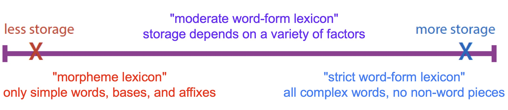
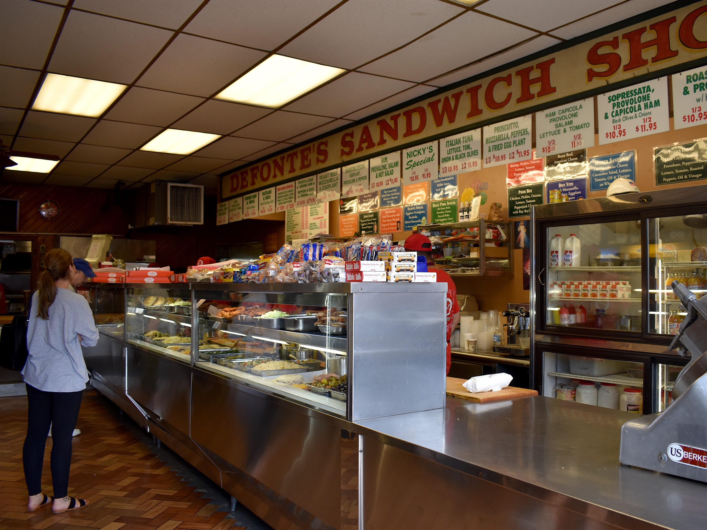
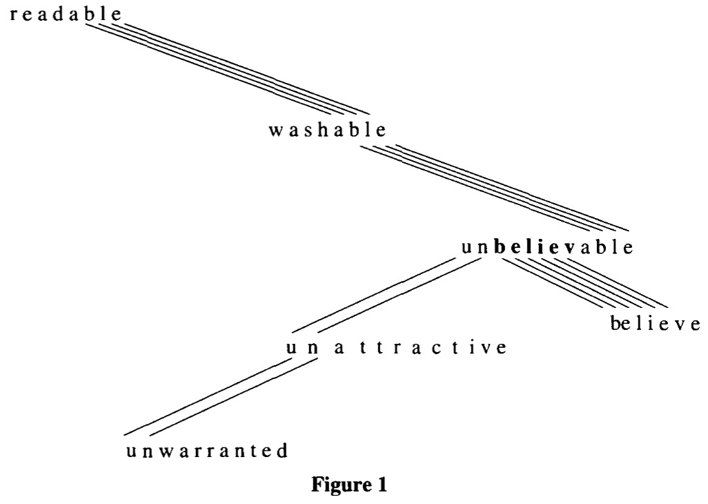
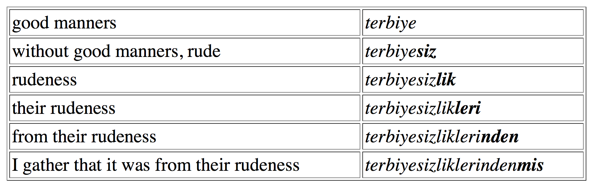

(Thanks to an anonymous student!)
The Storage of Linguistic Experience
Emergence
Whole-Word Storage
The Weaknesses of Whole-Word Storage

“Let’s see, I need to talk about gluing this thing, again, in the past. That’s ‘glue’, plus ‘re-’, and ‘-ed’.”
“Let’s see, I need to talk about gluing this thing, again, in the past. Looks like ‘reglued’ is the word I need!”
“In the traditional view, the lexicon is a storage area for all and only the content words or morphemes of a language. The lexicon is relatively static compared to the grammar, which contains all the moving parts of sentence generation: in the metaphor of a dictionary, lexical items are just passive items on a list which wait to be recruited into syntactic structures.”
“Rather than arguing that a lexicon of this type does not exist, I am going to argue that if such a lexicon does exist it is because it is emergent from the storage of linguistic experience, which is of a very different nature than the traditional conception of a lexicon would suggest.”
Generative approaches to grammar create all and only the attested forms
Morpheme-based lexicons are great for efficiently handling regular patterns
They struggle with irregularity and hard-to-memorize forms
Computation is cheap, but storage is expensive!
Phonemes, which build morphemes, which build words, which build sentences
Very little storage, lots of computation, language is generated

A Duck
A Tiger
A Hedgehog
A Squirrel
A Velociraptor
A Duck
A Tiger
A Hedgehog
A Squirrel
A Velociraptor
What was the route from your childhood home to the grocery store?
The color of your parents first car?
Your first teacher in grade school’s name?
Words, phrases, and sentences
Individual phonetic realizations of words
Every single word ever spoken to you
Lightfoot 1989 found listeners retained familiarity with unknown talkers’ voices after 10 days
Lightfoot, N. (1990). Effects of familiarity on serial recall for spoken word lists. The Journal of the Acoustical Society of America, 87(S1):S70–S71.
Goldinger & Azuma 2004 showed that individual tokens affect listener production 6 days after hearing them
What does your BFF sound like?
So, it’s not insane to think that we’re storing a lot of data

Words are stored as monolithic acoustic chunks
We are storing the surface forms
The smallest unit of storage is the acoustic word, stored with its semantic reference to the real world
Anything that happens frequently and without variation could be stored
“Mai Tai”, or “For all intents and purposes”, “Inflectional Morphology”
Set phrases could be stored as ‘words’

The ‘felt’ reality of phonemes and morphemes?
Phonological rules?
Morphological productivity?
Morphological creativity?
… and, uh, Language?
When an entity is observed to have properties that its parts do not have on their own


At a white square, turn 90° right, flip the color of the square, move forward one unit. At a black square, turn 90° left, flip the color of the square, move forward one unit
We know acoustic forms, and their mappings to semantic meanings
We are sitting on a huge pile of forms with meanings
How does morphology work?


… and plug it into the sentence(s)
No phonology or morphology needed!
Frequency effects come for free!

There are lots of form-meaning correspondences in the words we’ve memorized
We can take advantage of those to build new, understandable forms!

‘able’ is just that thing that is shared among all those words having to do with possibility
‘-en’ doesn’t occur in many plural forms, that can’t be a thing
Maybe ‘cran-’ is a type of berry?
If ‘affixed’ forms occur often enough, and their ‘bare stems’ occur often enough, we can come to ‘see’ the affix as an independent entity
“Wug. That’s like drug, or hug, or dug, or rug. When I talk about two of those things, it seems to always end with this -z gesture. So, [wʌgz]?”
Phonological and morphological rules are just formalizations of patterns visible across attested surface forms
Grammar comes from statistical patterns in language
This is exactly how reanalysis works, even in a generative world!
“Rather than arguing that a lexicon of this type does not exist, I am going to argue that if such a lexicon does exist it is because it is emergent from the storage of linguistic experience, which is of a very different nature than the traditional conception of a lexicon would suggest.”
Accounts easily for many phonetic phenomena
Phonology comes ‘for free’
Frequency-based effects are built in to the model
Easily quantifiable and testable, given sufficient data
Handles notions of morphology with less complexity!
It’s complicated, but it works!
If we can’t store this much, these theories are DOA
… but it sure seems like we can
“This is legal across morphemes, but not within”
“This can only be found in this one suffix”
Dutch “ge-” only works if there are no other derivational affixes
Other rules depend on the presence of absence of certain morphemes


If there’s a limited number of affixes, storage is tractable
Imagine you could add a single noun to a single verb in a language…
How do we differentiate words from sentences?
Idioms?
Sub-parts?
‘Word’ is tough, here, too.
Saying anything meaningful about data requires statistical generalizations across that data
“How often does this form occur relative to that one?”
“How regularly is this affix attested across the language?”
Usage-based Linguistics depends on easy access to huge amounts of data
You can’t ‘describe a language’ using usage-based methods
Are emergent morphemes so different from stored ones?
If we compute the grammar as needed, and make reference to that grammar, aren’t we back where we started?
It’s very hard to describe big patterns without some sort of generalizations!
Disposing of the big chunks is easy and effective
You’re gonna spend a long time chasing down those last slivers
… and you’re still gonna need some tweezers from time to time
The task is incredibly simple, and 100% effective
Once you’re done with an area, you’re done
… but it’s going to take you forever
… and you’ll probably want something more efficient for a big room!
Whole-Word storage privileges computation over storage
It replaces a great deal of complexity with bags of words
Analogy allows novel forms and productivity
It has some weaknesses, both with the seeming reality of sub-word chunks, in complex morphology, and in practical description
We’ll talk about frequency as a force in morphology!
… which absolutely bears on this discussion